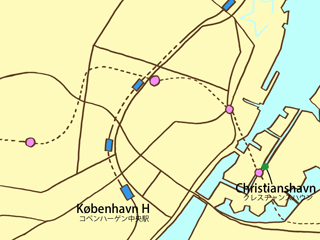

クレスチャンボー宮殿（Christiansborg）そして，現在は商工会議所となっているブアセン（Børsen）を右手にみながら，さらに運河沿いに進み，橋を渡ると，クレスチャンスハウンという地区に出る．この地区は，クレスチャン4世（Christian IV）の時代に，新たな町の一画としてその建設が進められました．
デンマークの首都である，コペンハーゲンは，中世以来19世紀半ばまで，町の中心部は外壁で囲まれ，中心部へ入ることは，4つの門を通してのみ可能でした．その4つの門は，それぞれ，ヴェスタポアト（Vesterport），ナアポアト（Nørreport），ウスタポアト（Østerport）そしてアマーポアト（Amagerport）と呼ばれていましたが，19世紀半ばに取り壊されてしまいました．しかし，クレスチャンスハウンには，当時の面影を残す唯一のものとして，門の通行税を徴収するために使われていた建物が，現在でも残っています．
この地区には，17世紀・18世紀の頃の建築物が今でも残っています．救世主教会（Vor Frelsers Krike）がその1つです．この特徴ある形の尖塔は，教会が17世紀に建設された後，18世紀になってからのものですが，高さが約90メートルあります．螺旋型をしたこの尖塔は，階段をつたって先端部分まで登ることができるようになっています．階段の数は，約150．風の強い日や冬の間は登ることができませんが，皆さんも一度挑戦されてみてはいかがでしょうか？